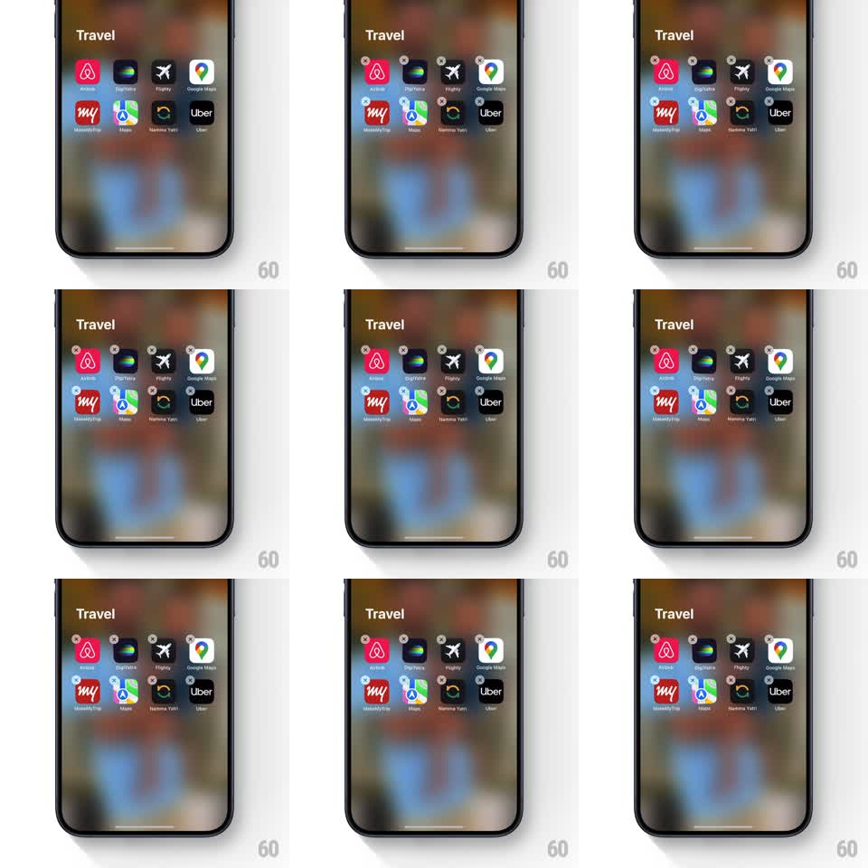

Media
Frame-by-frame

Rebuild this animation 1:1: the classic iOS home screen wiggle - in edit mode, every app icon oscillates with a small rotation jitter, each on its own phase, with minus badges attached.

Rebuild this animation 1:1: the classic iOS home screen wiggle - in edit mode, every app icon oscillates with a small rotation jitter, each on its own phase, with minus badges attached.
## Integration
Integration: stack-agnostic spec - springs given as stiffness/damping, timed motions as duration + curve; map every value to your framework and animation library of choice.
## Scene
An iOS home screen folder view ("Travel") over a blurred wallpaper: a grid of app icons (Airbnb, DigiYatra, Flighty, Google Maps, MakeMyTrip, Maps, Namma Yatri, Uber), each wearing a grey minus badge at its top-left corner.
## Motion spec
Pattern: edit-mode wiggle, continuous loop.
- Each icon rotates back and forth around its center (plus/minus 1.5 to 2 degrees) on a 280ms loop.
- Every icon runs the same period but a randomized phase and direction, so the grid shimmers instead of marching in lockstep.
- A tiny position jitter (under 1px) rides with the rotation to keep it organic.
- The minus badges wiggle with their icons as one unit.
- On entering edit mode, icons pop the badges in (spring stiffness 400 damping 18, 30ms stagger) and the wiggle fades up over 200ms; on exit, badges fade and rotation eases to zero (200ms).
## Calibration
- The amplitude is small - nervous energy, not dancing. Over 2.5 degrees reads wrong.
- The folder name and background stay still; only icons (and their badges) move.
## Reduced motion
Icons still; badges visible.
## Don't miss
- The rotation pivot is each icon's center, not its top corner.
- The loop never visibly restarts - phases hold steady indefinitely.